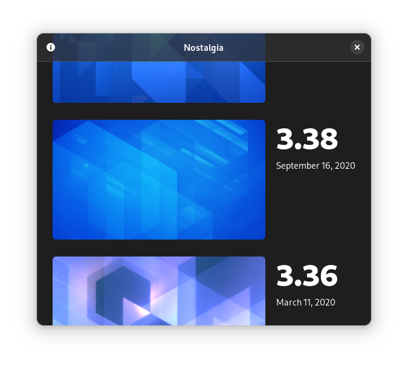

GNOME Circle — A certification program for third-party apps built for GNOME. We help app authors bring their apps in line with the design guidelines, making sure they're usable, accessible, and look gorgeous.
List of Circle Apps
I design public interest software and sometimes write about it. You can read my blog, send me email, or follow me on Mastodon.
Most of my projects are centered around GNOME, an indepedent operating system stack built in the commons, usable by everyone. All of this work is collaborative, but these are some recent initiatives I’ve been a driving force for.
GNOME Circle — A certification program for third-party apps built for GNOME. We help app authors bring their apps in line with the design guidelines, making sure they're usable, accessible, and look gorgeous.
List of Circle Apps
GNOME 40 — A major refresh to the operating system interface. It includes a cleaner spatial model, more approachable workspaces, and smooth touchpad gestures.
Release AnnouncementAdwaita — The design system for GNOME apps, implemented by the Libadwaita library, allows people to easily build delightful native apps that work on desktop, phones, and everything in between.
Design SystemApp Icons — A new platform app icon style optimized for easy adoption by third party apps. We also made design tools to support the new workflow.
LGM 2020 Talk Icon Design TutorialI occasionally write articles and speak at conferences, usually about design, public interest technology, or some combination of the two. These are some of my favorites from the last few years.
Post-Collapse Computing — What roles might our software play in climate collapse, and what can we do to make it's up to task?
Part 1 on my BlogHow to be Upstream-First — On why developing software upstream is more efficient, produces better results, and makes for a healthier ecosystem. This article explains the approach using GNOME Mobile as an example.
Purism BlogThere is no “Linux” Platform — On the state of the “Linux” app ecosystem and why vertical integration is the only way forward.
Article on my BlogSemantic Animation — A holistic approach to designing animated interfaces. I've co-written an article on A List Apart and given talks about it at conferences and meetups.
Article on A List Apart FOSDEM 2018 TalkDesign-Driven Free Software — My SFSCon 2017 talk on why Free (as in freedom) software needs to embrace design, why that’s hard to pull off, and how we can get there.
Video on VimeoMy focus has been interaction design in recent years, but I also do other stuff from time to time, including branding, web development, and illustration.
Nostalgia — A little app I built to make it easy to use Jakub Steiner’s awesome dynamic default wallpapers from past GNOME releases.
Get the App Brand for systemd — Like it or not, everything needs a logo these days, even low-level Linux infrastrucure projects.
Brand Guidelines
Dynasty — A tool for generating visualizations of succession timelines, e.g. all the roman emperors (PDF).
Project Website
Impossible Cities — A collaborative short story and illustration project, inspired by Calvino’s Invisible Cities.
Project Website